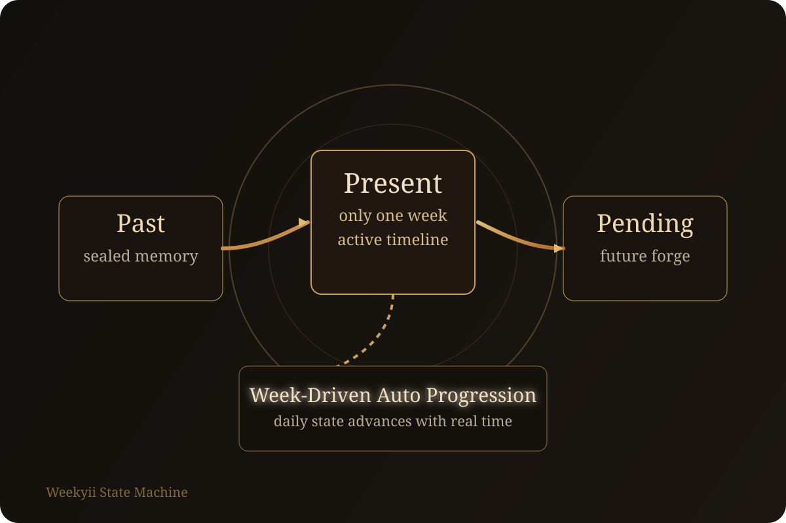
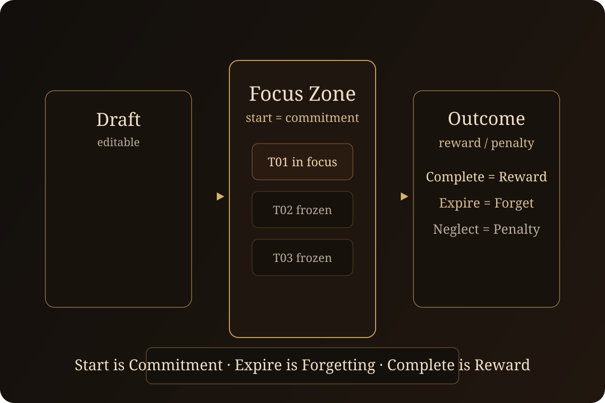
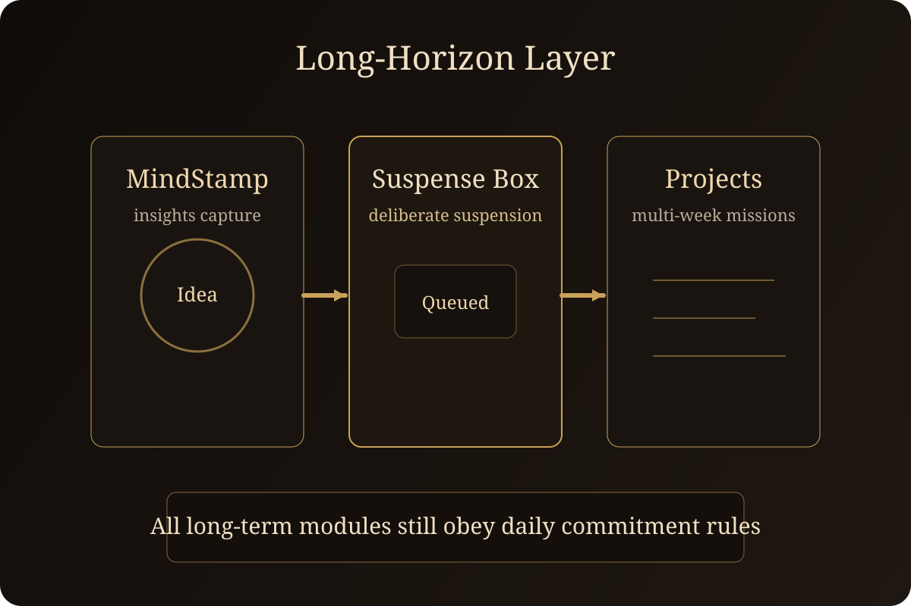

Weekyii 核心卖点
以周为核的 AI 原生 任务领域
Weekyii 以周为单位绑定注意力，而非列表噪音。它将任务变成仪式：起草、启动、专注、完成，然后遗忘。
以周为核
无待办债务
仪式化专注
系统模式
周优先
执行方式
专注 → 完成
记忆
仅过往
状态
当下仪式
裂痕
传统任务工具在无尽待办下崩塌
- 每日列表忽视生活与工作的周节奏。
- 待办堆积带来愧疚和过时任务。
- 频繁切换侵蚀深度专注。
- 没有完成仪式——任务无尽徘徊。
列表疲劳
无边界的列表变成未完成工作的坟场。
时间漂移
每日计划器遗忘用户关心的周叙事。
专注泄漏
任务相互竞争，无一获得完整关注。
无明确终点
任务悬而未决太久，从未真正结束。
誓约
Weekyii 理念：仪式、专注、遗忘
一周一领域
只有当前周可存在于 Present。其余皆移入 Past 或 Pending。
无待办债务
过期即遗忘；记忆唯有通过完成才能获得。
启动即承诺
一旦启动，当日不可重写。专注是神圣的。
起草 → 执行 → 完成
仅专注区
Past = 真相
Pending = 承诺
引擎
贡献一：以周驱动的自动推进状态机
Past / Present / Pending 不是视图，而是强制执行的时间线状态。
步骤 01
单一 Present 周
当前周是唯一活跃的执行领域。
步骤 02
日自动推进
今日随真实时间切换，而非手动刷新。
步骤 03
跨周滚转
Past 吸收旧周，Pending 提升新周。
步骤 04
习惯强化
记录的任务带有清晰的周时间压力。
- 以周为建模核心，提供长期陪伴与监督，而非碎片化的日焦虑。
- 任何明确记录的任务即刻获得时间感知，让拖延在心理上更难发生。
- 状态机（非用户记忆）保障时间线推进的完整性。

界面
一周横跨五个界面
Present
首页领域
今日概览、专注区与截止时间控制。
周视图
七日滑动
在当前周内滑动浏览，无需离开 Present。
Pending
未来工坊
创建未来周，提前播种草稿。
Past
编年史
仅已完成的任务可被记住与搜索。
周总结
仪式回顾
完成数、过期数、总启动天数。
iOS + macOS + iPadOS
无外部数据库
纯 Markdown 文件
仪式
贡献二：承诺与问责机制
启动即承诺 · 过期即遗忘 · 完成即奖励 · 忽视有代价。
- 每天都有明确的截止时间（kill_time），每项任务都有清晰的主人：你。
- 起草区可编辑。启动后，任务进入 Focus/Frozen，序列纪律开始。
- 存在轻量级后悔路径：任务可延后，但承诺压力仍可见。
- 过期任务永久遗忘，迫使尊重每日承诺，而非囤积待办。
启动 = 承诺
过期 = 遗忘
完成 = 奖励
忽视 = 代价

周视界
向前规划，不污染当下
- Pending 保存完整结构的未来周。
- 进入新周时，Pending 自动迁入 Present。
- 任何时候只存在一个 Present 周。
- 需要时可将今日草稿复制到未来某天。
Pending 周
播种草稿，无干扰无愧疚。
自动滚转
Past 自动吸收已完成周。
周视图
滑动浏览七天，清晰状态信号。
后悔机制
将任务移至未来某天。
编年史
Past 仅保留挣得的记忆
已完成任务
真相
过期任务
仅计数
周总结
自动
Past 视图
月/周
- 已完成任务保留时间戳。
- 过期任务收缩为数字汇总。
- Past 可按周、月、日搜索。
- 周封存后不可回溯编辑。
未来模块
贡献三：MindStamp + 待定盒 + 项目节奏
为长周期任务构建，同时遵守每日执行规则。
- MindStamp 即时捕捉意图，长线目标不再从记忆中泄漏。
- 待定盒承载刻意延后的事项，而非混入每日专注通道。
- 项目管理跨多周，但每一步仍落在每日承诺流程中。
- 这让 Weekyii 在持续、习惯驱动的执行上强于通用待办。
MindStamp
待定盒
项目节奏

小组件
Weekyii 已内置小组件
- 今日专注与剩余任务呈现于主屏幕。
- 极简、仪式感的一瞥，保护注意力。
- 小组件支持日与周快照。
- 为 iOS、iPadOS、macOS 设计。
小组件类型
今日专注
周快照
一瞥可见
平台
iOS / macOS
状态
已发布
引擎室
纯文件数据模型，零黑盒
STATE.md
全局状态：当前日、周、滚转时间戳。
week.md
周总结，含每日状态。
day.md
起草、专注、冻结、完成区以文本追踪。
- 无需数据库；一切可读可携。
- 自动滚转保持 Past 周的完整性。
- 截止时间执行守住仪式边界。
前路
发布状态与下一里程碑
当前
核心周引擎、仪式流程、小组件与文件模型已完成。
下一步
App Store 发布准备与新手引导打磨。
后续
项目 + MindStamps 模块与分析扩展。
Weekyii 旨在成为仪式，而非列表。每一周都是一场有清晰开始、专注中段与明确终点的旅程。